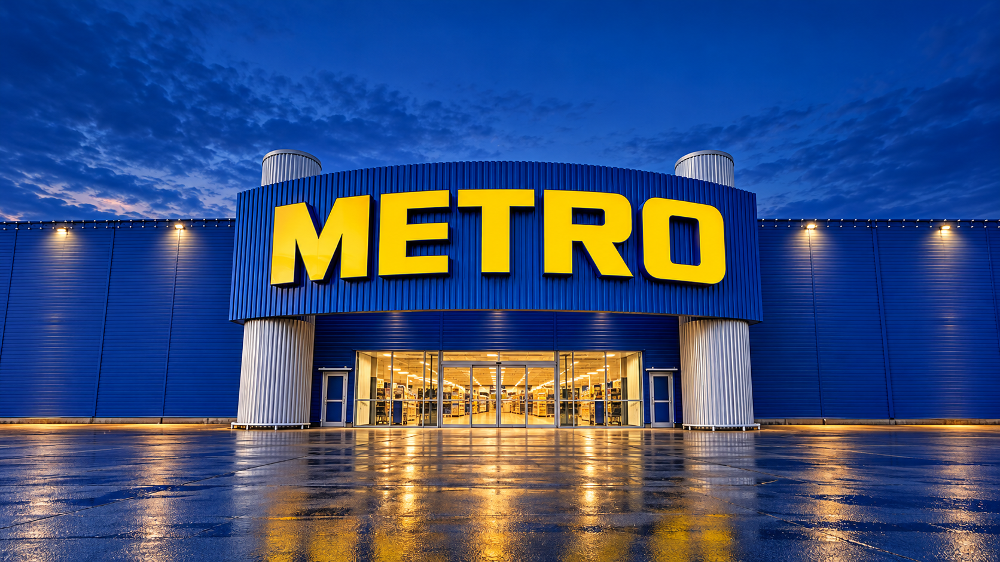

Хороший вкус.
Каждый день.
Продукты для любимых блюд, вещи для дома
и идеи, ради которых хочется собраться вместе.
ул. Маршала Прошлякова, 14

рядом с вами.
Сегодня — за привычным.
Завтра — за вдохновением.
Выберите направление.
Каталог откроется на официальном сайте METRO.
За одной вывеской —
разные истории.
Собственные марки METRO создаются для разных задач.
Познакомьтесь с тремя из них.
Chef
Для тех, кто любит готовить.
Линейка для ресторанов и кафе, а также для вдохновения на домашней кухне.
У каждого дня свой вкус.
У зимы — своё волшебство.
Когда обычные покупки становятся подготовкой
к самому тёплому празднику года.
Время верить
в чудеса.
Огоньки загораются. Дом становится теплее.
Соберите праздник, который хочется запомнить.
Большое новогоднее настроение.
Скоро чудеса
Сначала настроение.
Потом — детали.
Выберите палитру и пространство.
Мы соберём небольшой список идей из витрины.
Редакционная подборка, не комплект продавца. Можно сохранить отдельные товары или весь список.
Всё для вашего
маленького чуда.
Товары из интернет-каталога METRO.
Сохраните понравившееся и соберите свой список.
Пока ничего не нашлось
Попробуйте другое слово или категорию.
Демонстрационная витрина, без оформления заказа. Изображения — художественные иллюстрации категорий, а не точные фото моделей. Подборка основана на опубликованном каталоге METRO; актуальность, цену и наличие в Строгино проверяйте по ссылке в карточке.
Не просто украсить.
Создать ощущение.
- Выберите главный цвет
Глубокий красный, хвойный зелёный и немного золота — классика, которую легко собрать.
- Добавьте тёплый свет
Гирлянда на ёлке, мягкое свечение у окна и уютный уголок для подарков.
- Оставьте место для волшебства
Дед Мороз у ёлки, венок у входа и маленький сюрприз для каждого гостя.
Меньше вопросов.
Больше праздника.
Короткие ответы и прямые ссылки
на официальную информацию.
Можно прийти без карты METRO?+
Да. По действующим правилам METRO карта не обязательна для посещения и покупок для личных нужд. Для программ лояльности, специальных условий и профессиональных покупок карта необходима.
Официальные правила посещения ↗Где оформить карту?+
Перейдите в раздел оформления карты на официальном сайте METRO. Там указаны актуальные условия и порядок оформления.
Оформление карты METRO ↗Почему здесь нет цен и оплаты?+
Это независимая витрина идей. Кнопка METRO в каждой карточке ведёт к продавцу: там можно проверить цену, точную модель и доступные способы покупки. Наш список желаний не является заказом.
Как проверить товар именно в Строгино?+
На официальном сайте выберите торговый центр на улице Маршала Прошлякова, 14 и проверьте наличие и условия покупки. Наличие товара на общей странице каталога не подтверждает остаток в этом магазине.
Перейти на официальный сайт ↗Сохранится ли мой праздничный список?+
Да, в этом браузере, если разрешено локальное хранение. Для переноса на другой телефон откройте список желаний и нажмите «Скопировать список». Очистка данных браузера удалит сохранённые товары.
«Самое главное украшение —
люди рядом».
А ёлку, огоньки и праздничные детали
мы уже собрали в одной витрине.
Сначала вдохновение.
Потом — за покупками.
Перед поездкой проверьте часы работы, наличие и условия покупки на официальном сайте.
Официальный новогодний каталог ↗✳